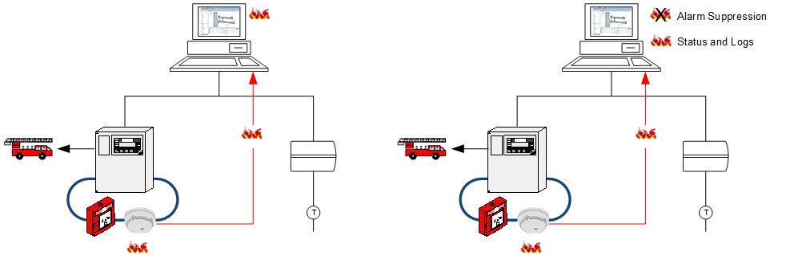
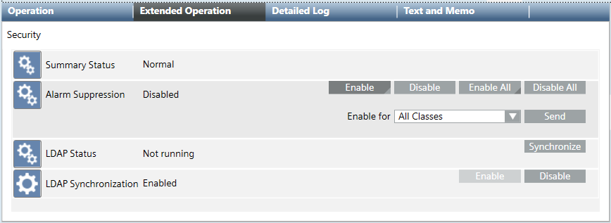
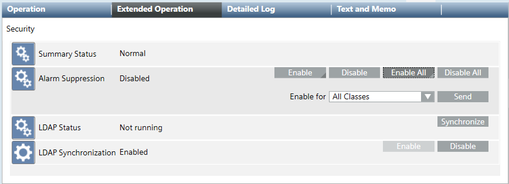
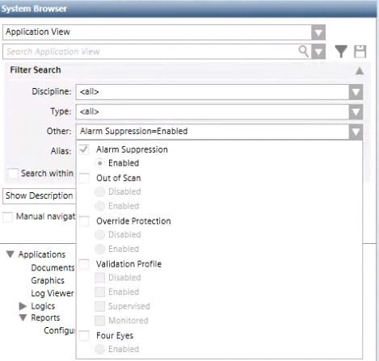
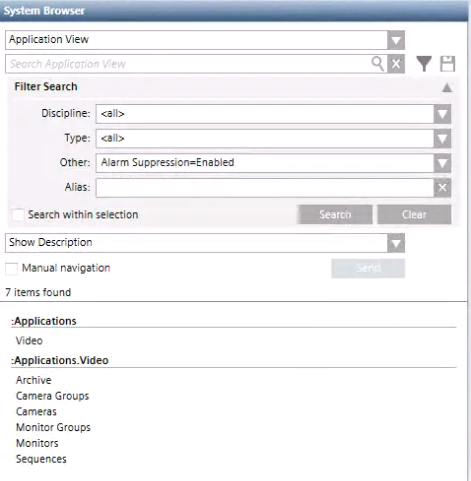

Handling Alarm Suppression for System Objects
When alarm suppression is enabled for an object or subtree, any related events do not display on the management station. All consequences of such events on the management station, that is, event-based procedures (such as, event-handling procedures or reactions), are not activated. However, value and status changes of the affected objects are still updated and logged in the history.


Alarm Transmission to Fire Department
The alarm suppression feature disables the display of events concerning the affected object or subtree. The alarm functionality (for example, the fire detection system) is not affected. Consequently, any incoming alarms are still transmitted to the fire department.
To block the alarm transmission to the fire department, you must exclude the fire detection by disabling the area, zone, or fire detector on the panel as follows:
a. In System Browser, select the fire object.
b. In the Operation tab, next to the property Mode, click Disable.
Prerequisites
- You are authorized to handle alarm suppression.
- One or multiple system objects support the alarm suppression feature.
NOTE: Due to some restrictions depending on specific countries regulations, in some configurations the alarm suppression feature can be disabled. In such cases, the alarm suppression indicator does not display on the Summary bar, and executing the following procedures has no effect.
Enable Alarm Suppression for a Single Object
- In System Browser, select the system object for which you want to enable alarm suppression.
- Select the Extended Operation tab.
- To enable alarm suppression for the selected object, next to the Alarm Suppression property, click Enable.
- To suppress alarm classes for the selected object, from the Enable For drop-down list select one of the following:
- Select All classes to suppress all the events on the management station.
- Select a specific alarm class whose events you want to suppress on the management station.
- Alarm suppression is enabled for the selected system object. By default, if the selected object is in alarm when you enable alarm suppression its events remain visible in the Summary bar and Event List. Alarm suppression will activate on the next events that occur.
NOTE: The following error message displays if the alarm suppression feature is not available for your configuration:Enable failed.

Enable Alarm Suppression for an Entire Subtree
- In System Browser, select the system subtree for which you want to enable alarm suppression.
- Select the Extended Operation tab.
- To enable alarm suppression for an entire subtree (that is, for the selected object and all objects below the selected object in the tree), next to the Alarm Suppression property, click Enable All.
- To suppress alarm classes for the selected system subtree, from the Enable For drop-down list select one of the following:
- Select All Classes to suppress all the events on the management station.
NOTE: The Enable All command fails forAll Classesin case descendants in the tree have validation configured, but the data point at top where the command is executed is not configured for validation. - Select a specific alarm class whose events you want to suppress on the management station.
- Alarm suppression is enabled for the selected system subtree. By default, if the selected object or any object below the selected object in the tree is in alarm when you enable alarm suppression its events remain visible in the Summary bar and Event List. Alarm suppression will activate on the next events that occur.
NOTE: The following error message displays if the alarm suppression feature is not available for your configuration:Enable failed.

Disable Alarm Suppression for a Single Object
- In System Browser, select the system object for which you want to disable alarm suppression.
- Select the Extended Operation tab.
- For the selected object, next to the Alarm Suppression property, click Disable.
- Alarm suppression is disabled for the selected object.
NOTE: If the object is in alarm when you disable alarm suppression its events display in the Summary bar and Event List.
Disable Alarm Suppression for an Entire Subtree
- In System Browser, select the system subtree for which you want to disable alarm suppression.
- Select the Extended Operation tab.
- For the selected subtree, next to the Alarm Suppression property, click Disable All.
- Alarm suppression is disabled for the selected object and all the objects below the selected object in the tree.
NOTE: If the selected object or any object below the selected object in the tree is in alarm when you disable alarm suppression its events display in the Summary bar and Event List.
Retrieve the List of System Objects Affected by Alarm Suppression
You can retrieve the list of system objects affected by alarm suppression using the System Browser filter or generating a report.
Method 1: Filter Objects in System Browser
- In System Browser, click .
- Open the Other combo box and select Alarm Suppression.

- Click Search.
- The results display the item found area.

Method 2: Generate a Report
- In System Browser, select Application View.
- Select Applications >Reports > Status.
- In the Default tab, click Import
 .
. - In the Open dialog box, do the following:
a. Navigate and select the alarm suppression template: Report.Status.HQ.AlarmsSuppression.xml.
b. Click Open. - Click OK.
- Select Applications >Reports > Status > Alarm Suppression.
- The alarm suppression report template displays in the Default tab.
- Click Run
 .
.
- The list of system objects affected by alarm suppression displays in the report template.